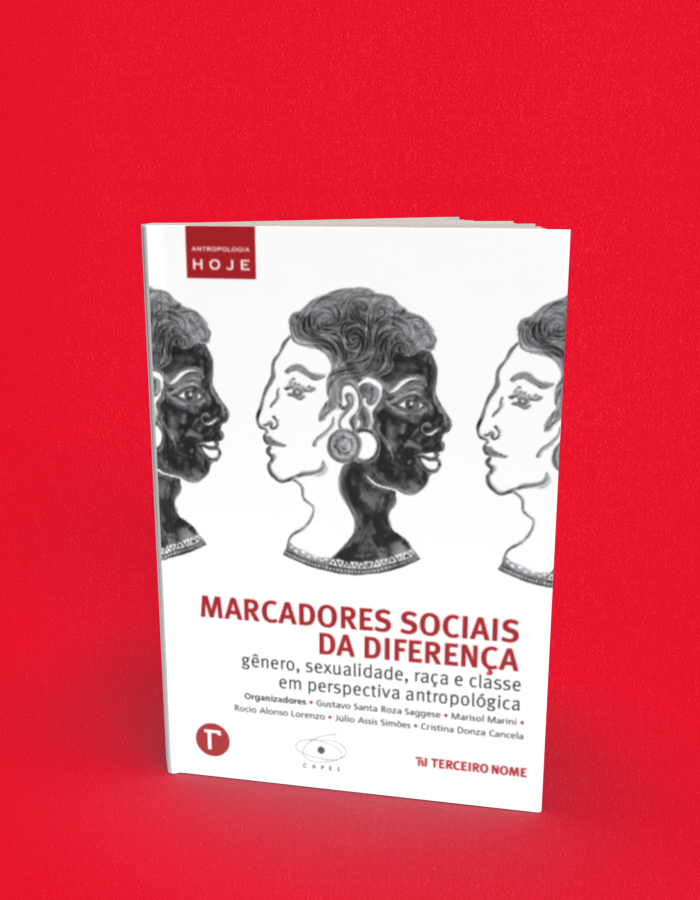

Marcadores sociais da diferença gênero, sexualidade, raça e classe em perspectiva antropológica
A compra acontece no site da livraria, em uma nova aba. Consulte lá os preços e a disponibilidade. Procure pelo título ou ISBN deste livro.
- Autoria / créditos
- Gustavo Santa Rosa Saggese, Marisol Marini, Rocío Alonso Lorenzo, Júlio Assis Simões e Cristina Donza Cancela
- Páginas
- 182
- Formato
- 16 cm x 23 cm
- Acabamento
- brochura
Sobre o livro
Com textos de 26 autores, esta coletânea apresenta uma amostra significativa do leque amplo e crescentemente diversificado de recortes de investigação antropológica sob a rubrica dos “marcadores sociais da diferença”, resultado de um esforço de trocas e interlocuções voltadas à formação de jovens pesquisadores e à produção de conhecimentos. A questão central da materialização da diferença é elaborada em desenvolvimentos instigantes, que problematizam experiências sociais e sentidos de corporalidade.
Também se destacam diferentes reflexões sobre gênero e sexualidade, assim como sobre raça e classe, como formas articuladas e estruturantes de desigualdade, que operam em um âmbito variado de relações sociais e cenários institucionais. A construção de sujeitos de direitos e a nomeação de exclusões são realçadas, seja através das diferentes faces da discriminação e da violência, seja por meio de formas de sociabilidade e estética e de práticas artísticas e culturais.
Descortina-se, pois, uma rica agenda de pesquisas e reflexões atentas aos problemas postos pelas diferenças socialmente instituídas, sem perder de vista a importância das lutas pelos direitos fundamentais e por justiça social.
← Voltar ao catálogo